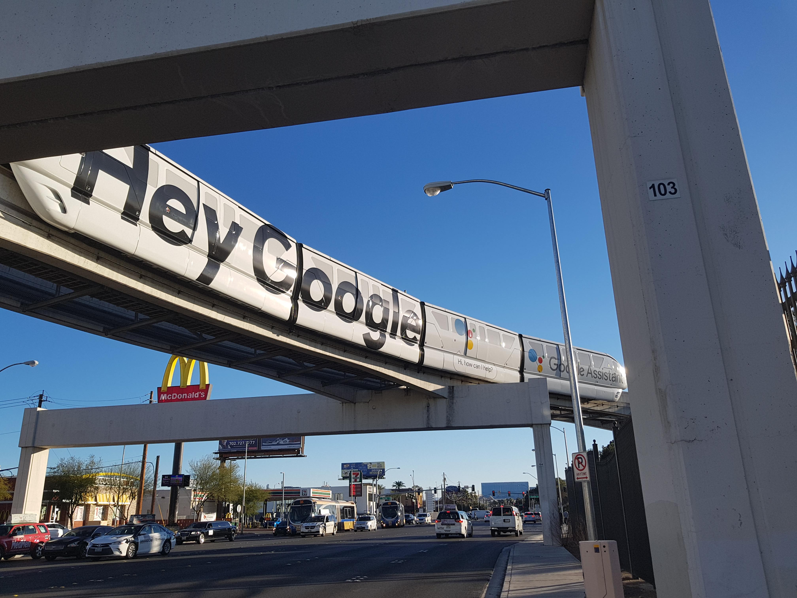
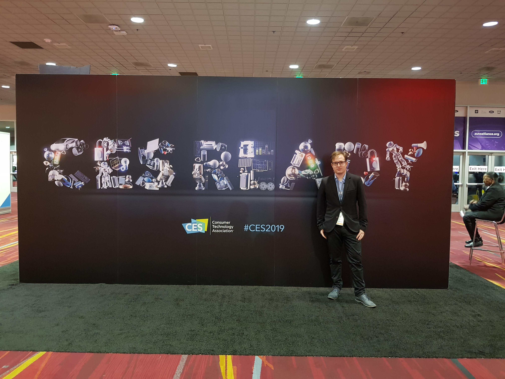
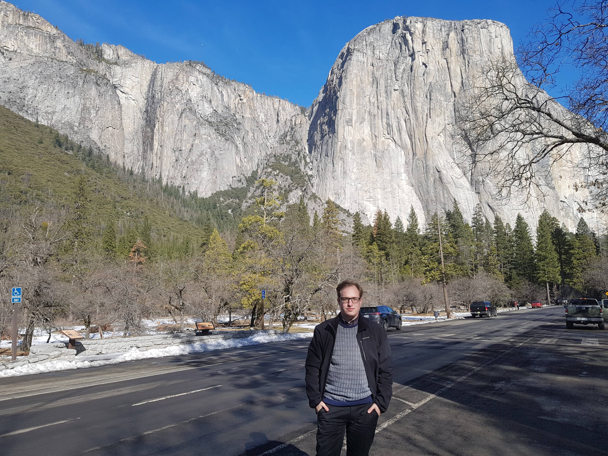
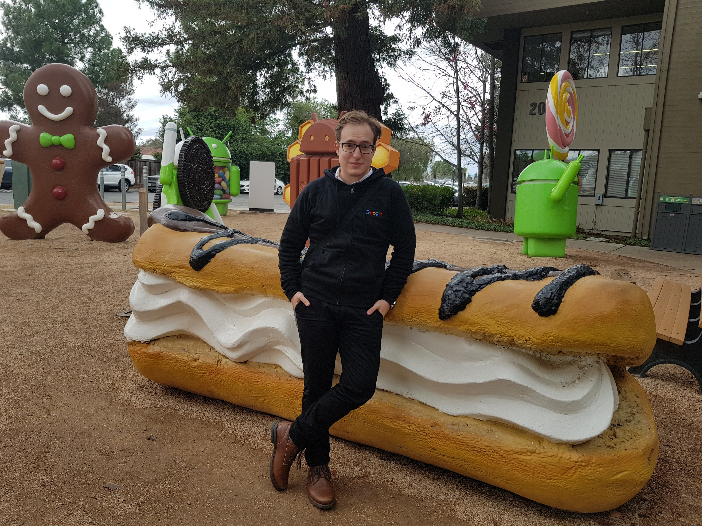
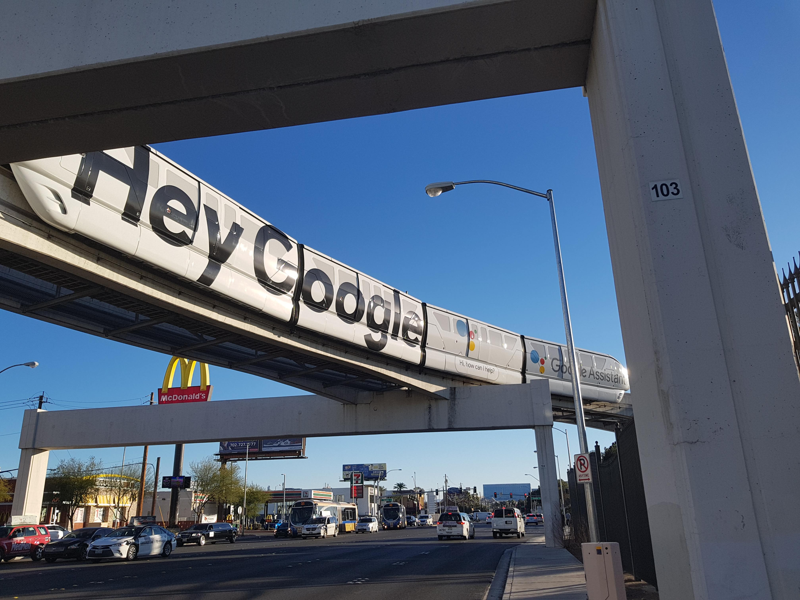
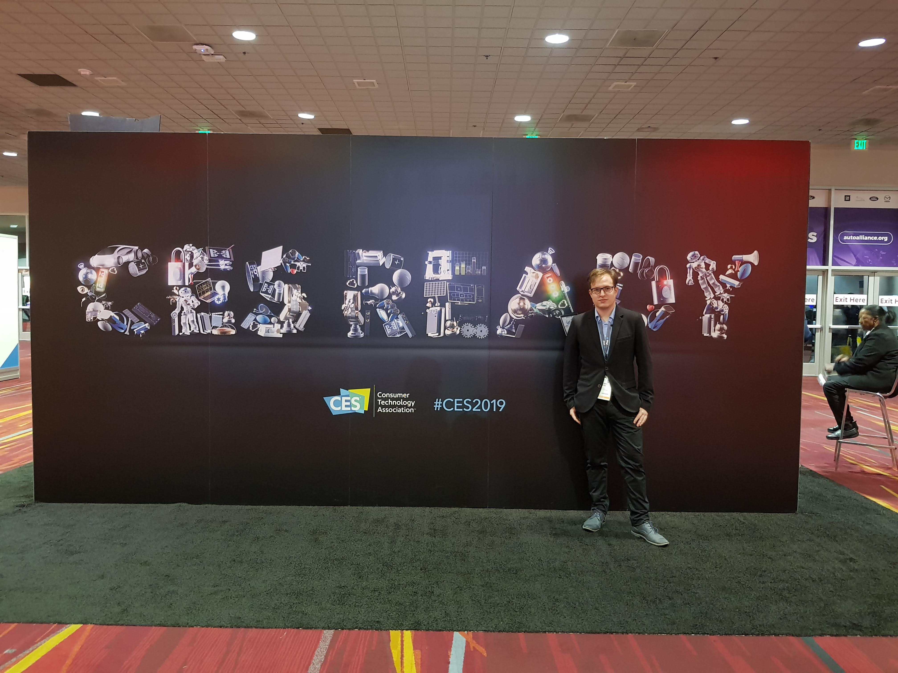
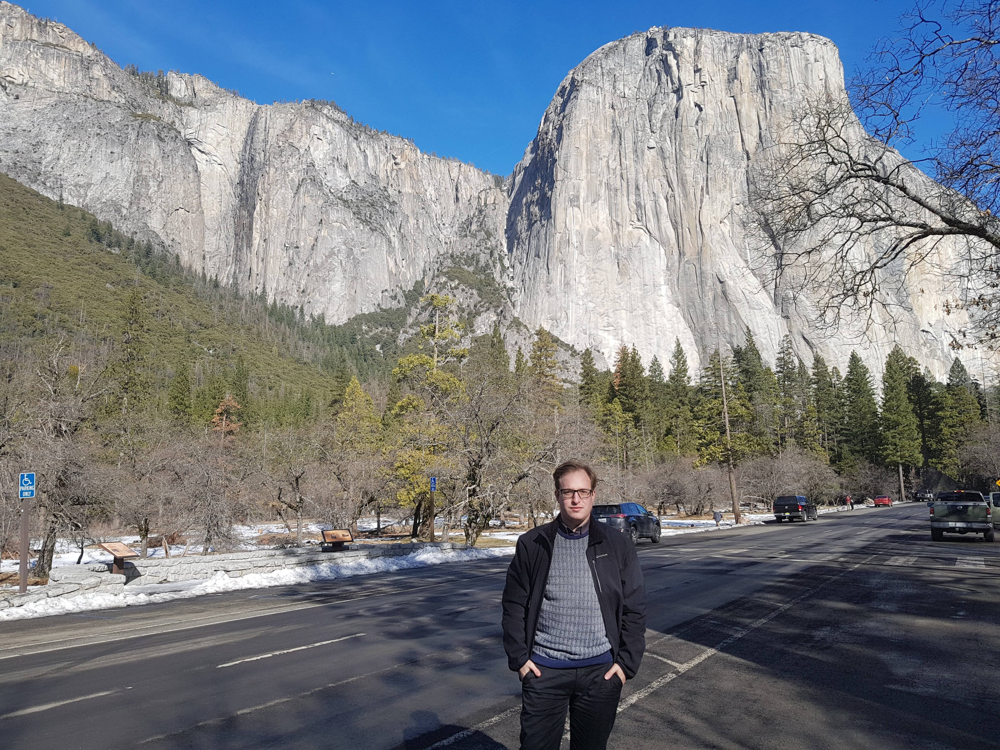
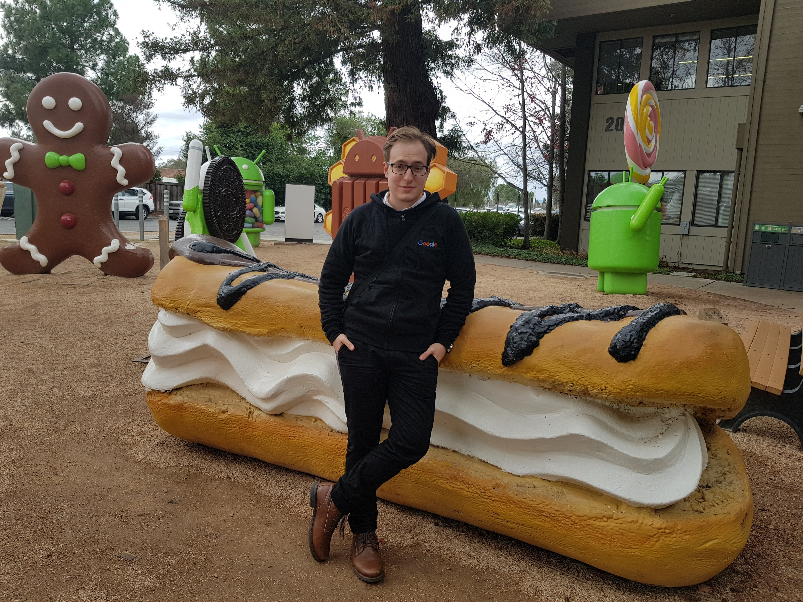

2015-2018 Budapest University of Technology and Economics
mathematics
Especially interested in pattern recognition and ranking systems powered by deep-learning algorithms. Daily user of concrete artificial intelligence libraries, but also a regular dreamer of the implementation of the most abstract concepts of consciousness. Ability to quickly and ultimately reevaluate the core ideas to create a better model of a phenomenon. Keen to understand the mathematical background of any problem.
🇭🇺 Hungarian - Native speaker
🇬🇧 English - C2
🇩🇪 German - B1
🇨🇳 Chinese - HSK 2
Tech stack: TensorFlow / PyTorch / CUDA
Tech stack: C++ / Lua / Python
 






